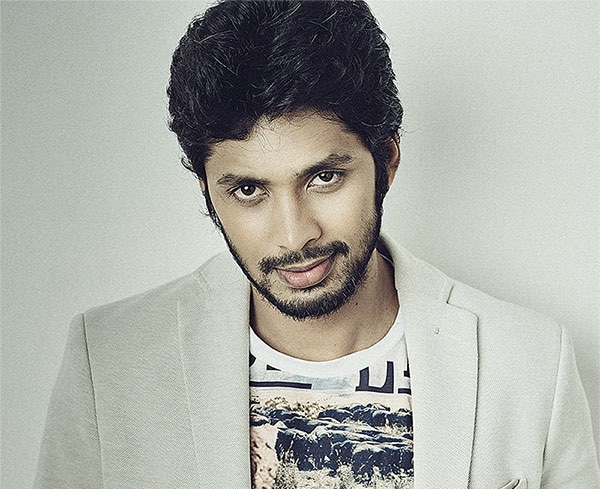

Jayaraj Elaraj
Design Technolgist, Full Stack Developer at Chargebee.
👉 jjayaraaj@gmail.com
Tech stack
Angular 2+, JavaScript, NodeJS
Vue 3
React
Ionic 6
React Native
Express
MongoDB, MySQL
Adobe Photoshop, Figma
Bootstrap, Tailwind, Story Book
PHP, Codeigniter
Academic Qualifications
🏆 Advance Program for Marketing Professional
Indian Institutes of Management calcutta (2015-2016)
🏆 Master of Business Administration E-Business
Annamalai University (2011-2013)
🏆 Bachelor of Corporate Secretaryship
Madras University (2002-2005)
🏆 Supply Chain Management
Loyola Institute of Business Administration (2015-2016)
Work History
🚧 DESIGN TECHNOLOGIST LEAD | CHARGEBEE
11/2021 - Present
Worked with designers, product managers, management, internal business partners and other subject
matter experts
- Develop functional prototypes to prove and sell concepts to development teams and senior
leadership
- Developed tech agnostic design language system usoing to facilitate the design team and
development team to reuse the components.
- Collaborate with UX designers & other front-end developers to define best practices and
processes around user interface development
- Proactively mentor and develop other Designers, Design Technologists and Web Developers
- Participate in the full lifecycle of product development; including ideation, design,
development, implementation and validation
- Evaluate and document any new creative and/or engineering standards or patterns that could arise
from your work
🚧 DESIGN TECHNOLOGIST & WEB CONSULTANT | COGNIZANT
7/2011 - 11/2021
Responsible for working on range of projects, planning, designing and developing the
strategy using latest trends and technology. Creating business plan indicating how to
create and develop a company's online presence adhering to the business
development strategy. Creating a unique online user experience for customers with a
strategy and designing the structure of new technology systems, overseeing the
implementation of programs, and liaising with the software development team
- Designing and implementing SAAS & PAAS solutions.
- Creating strategy for marketing initiative.
- Developing and maintaining Cognizant QE&A summit websites and mailers.
- Creating microsites for client visits with active participation.
- Designing prototypes for apps and websites.
- Aligning projects with corporate objectives.
🚧 GUI DESIGNER & DEVELOPER | PHOENIX YORK
10/2017 - 10/2019
worked as a member of a multi-disciplinary team, carrying out important work. My
Mandate was to ensure the websites built for customers precisely matched their
requirements.
- Built an ecommerce webapp to sell products online. Increased company sales by 58%.
- 50+ websites developed and maitained
- Onboarded and trained customers (Webinars & Conferences)
- Managed a small team of developers
🚧 GRAPHIC DESIGNER | CONNEXIONS GROUP
11/2007 - 6/2009
Worked as a user interface expert in a web development team. Developed and maintained a wide range of
booking websites.
- Organized SEO & SEM campaigns on a local and global scale.
- Maintained 30 + websites
- Implemented responsive design as an early adaptor
- Transformed procedural PHP web applications to frameworks
- Reduced traditional marketing expenses by creating an online presence